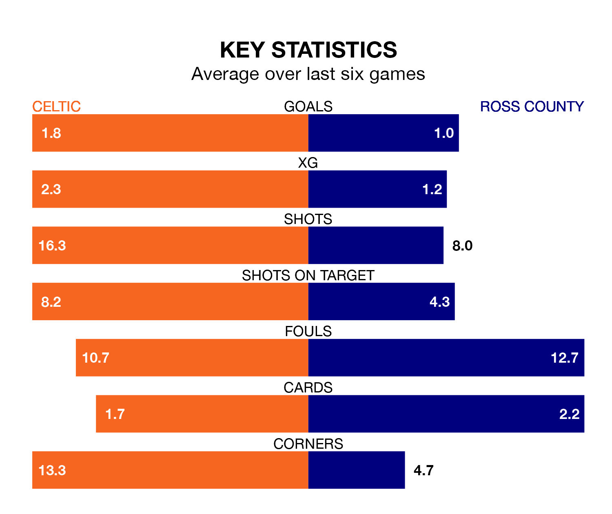

Mid-season relegation candidates Ross County face a challenge away against high-flying Celtic at Celtic Park on Saturday.
Ross County are 11th in the Premiership table, and have picked up four wins and six draws in their 19 games to date.
The Bhoys, meanwhile, are top of the standings with 54 points, having won 17 and drawn three of their first 22 matches.
With 53 goals in 22 games so far this season, Celtic are the league's highest scorers with 2.4 goals per game. And they are conceding fewer than average, letting in 15 goals at a rate of 0.7 per game.
Ross, meanwhile, are below average scorers, with 0.9 goals per game, compared to a league average of 1.3. They have conceded 1.5 goals per game.
In Matthew O'Riley, the Bhoys have one of the league's most on-form strikers so far this season. He has notched 10 goals in 21 appearances, to sit second in the scoring charts.
His goal rate of one every 184 minutes is quicker than that of Simon Murray, County's top scorer with a goal every 348 minutes, and a total of four goals in 19 games.
In the last 10 years, Celtic and Ross have played each other on 31 occasions. Celtic won 25 of them, Ross two, and they drew four times.
On average, the Bhoys scored 2.6 goals and the Staggies 0.5 in those matches.
Their last meeting was on November 4, when Celtic won 3-0 away.
The hosts are in reasonable form in Premiership, with four wins and two losses from their last six games.
With two wins and a draw over that period, the Staggies' form is worse – they have taken seven points from 18, compared to Celtic's 12.
Celtic's last match was on January 2, a 3-0 win against St. Mirren, with Daizen Maeda, Greg Taylor and O'Riley getting the goals for the Bhoys.
Ross lost 3-0 against Aberdeen last time out, also on January 2.
Saturday's match will be refereed by Euan Anderson, who has taken charge of five Premiership games so far this season, issuing no red cards and booking 15 players. He has awarded one penalty.
The last Ross game Anderson refereed was the 1-1 draw at home against Livingston on September 16. He is yet to oversee a match featuring Celtic this season.
Updated: 08:51 (UTC), 25/01/24